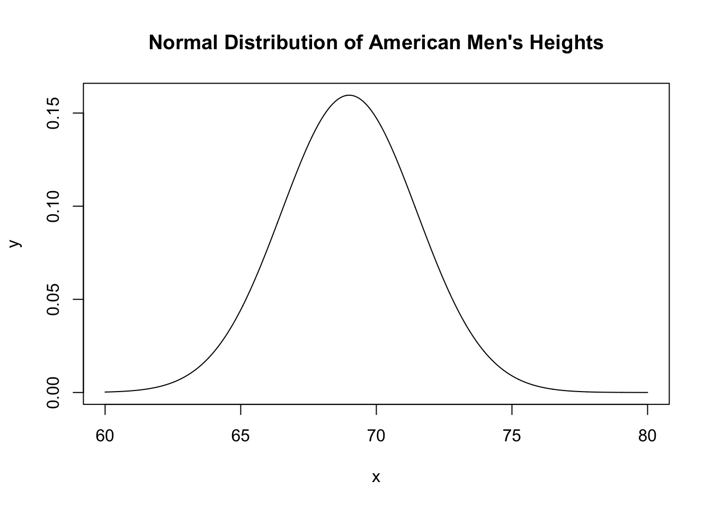

The distribution of heights of adult American men is approximately Normal with mean 69 inches and standard deviation 2.5 inches. Draw a Normal curve on which this mean and standard deviation are correctly located.
